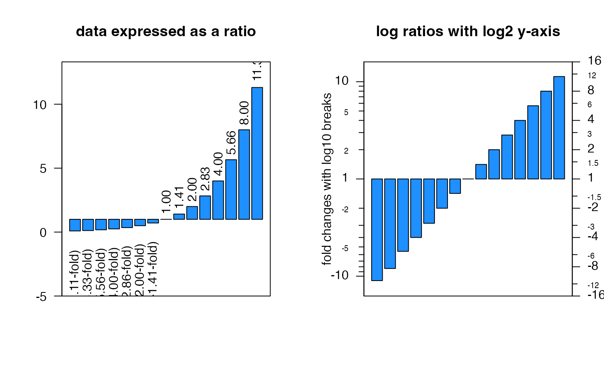
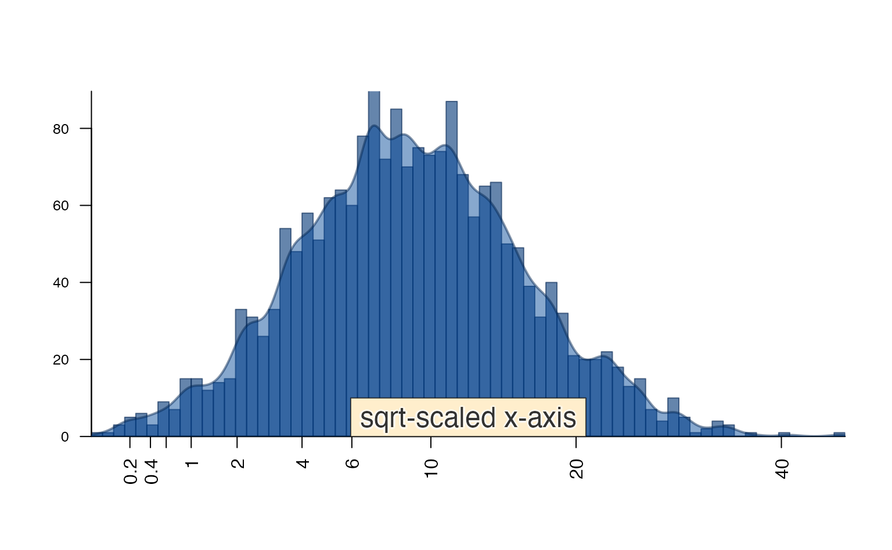
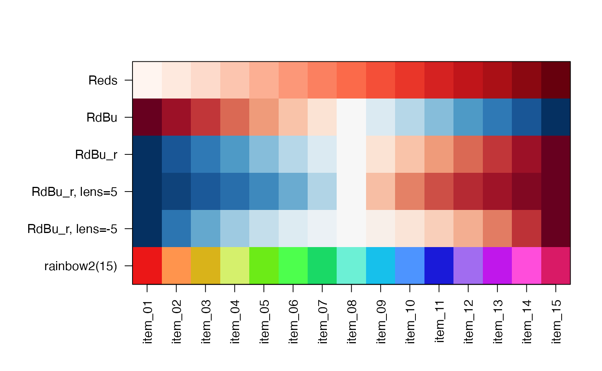

Jamba Overview
Jamba is intended to contain JAM base functions, to be re-used during analysis, and by other R packages. Functions are broadly divided into categories.
Plot functions
plotSmoothScatter()
A common problem when visualizing extremely large datasets is how to
display thousands of datapoints while indicating the amount of overlap
of those points. The R graphics::smoothScatter() function
provides an adequate drop-in replacement for most uses of
plot(), where several aspects are enhanced. Specifically,
parameters related to the density function and related bandwidth
arguments are enabled, which otherwise is possible but tedious.
The arguments bandwidthN and nbin define
the number of bandwidth steps, and the number of visual bins,
respectively. The bandwidth steps defines the level of detail calculated
for the 2-dimensional density map, higher values give more detail, seen
as more “grainy” – ultimately whether you can see individual points. The
number of visual bins determines the amount of detail used to render the
density as an image – effectlvely how many density pixels. Higher values
show more detail, but have much larger memory requirement, and can be
slow to render for multi-panel plots.
The argument useRaster=TRUE by default renders the plot
as a rasterized image, making it substantially faster and smaller
especially when rendered as a PDF, SVG, or any vector type output.
An example showing plotSmoothScatter() with argument
doTest=TRUE. The test data shows a set of points not
well-resolved with default smoothScatter(), but which is
more clearly displayed with plotSmoothScatter().
plotSmoothScatter(doTest=TRUE);
The function imageDefault() is a slight enhancement to
graphics::image() specifically to enforce square pixels
when useRaster=TRUE. The default
graphics::image() assumes each pixel will be rendered in a
1:1 aspect ratio, therefore the 2-dimensional density map is distorted
when the axis ranges are not symmetric 1:1. Note that
plotSmoothScatter() calls imageDefault().
imageByColors()
The imageByColors() function is intended to take a
matrix or data.frame that already contains colors in each cell. It
optionally displays cell labels when supplied.
Cell labels are grouped to display one unique label per repeated
label, using the function breaksByVector() to group
labels.
This function is particularly useful to simplify labels in a large table of repeated values, for example in experiment design.
Here, we define a simple data.frame composed of colors, then use the data.frame to label itself:
a1 <- c("red","blue")[c(1,1,2)];
b1 <- c("yellow","orange")[c(1,2,2)];
c1 <- c("purple","orange")[c(1,2,2)];
d1 <- c("purple","green")[c(1,2,2)];
df1 <- data.frame(a=a1, b=b1, c=c1, d=d1);
imageByColors(df1, cellnote=df1);
Labels can be independently rotated and resized, an arbitrary example is shown below:
imageByColors(df1,
cellnote=df1,
useRaster=TRUE,
#adjBy="column",
cexCellnote=list(c(1.5,1.5,1),
c(1,1.5),
c(1.6,1.2),
c(1.6,1.5)),
srtCellnote=list(c(90,0,0),
c(0,45),
c(0,0,0),
c(0,90,0)));
Axis label functions
There are several useful axis labeling functions.
For log-transformed data, minorLogTicksAxis() is a
flexible function to help deal with different transforms, such as
log2(1 + x), which is common when analyzing gene expression
data, or any measurement data that may contain zeros and no negative
values.
Data transformed with log2(1 + x) must be correctly
inverse-transformed to generate the proper numeric labels.
By default, the log labels are displayed in base 10, while the underlying data can be any numeric base. (The default assumes log2.)
Also note that zero values are represented as zero.
expr <- 2^seq(from=0, to=17, length.out=20) - 1;
par("mfrow"=c(2,2));
layout(matrix(ncol=2, data=c(1,2,3,3)));
bp1 <- barplot(expr,
las=2,
col="dodgerblue",
main="measurement data in normal space");
axis(1, at=bp1[,1], labels=seq_along(bp1[,1]), las=2)
par("xpd"=FALSE);
bp1 <- barplot(expr[c(1,which(expr<=100)+1)],
ylim=c(0,100),
las=2,
col="dodgerblue",
main="zoomed-in y-axis");
axis(1, at=bp1[,1], labels=seq_along(bp1[,1]), las=2)
log_expr <- log2(1 + expr);
bp1 <- barplot(log_expr,
las=2,
col="dodgerblue",
ylab="log2(1 + x) value",
main="measurement data after log2(1+x) transform");
axis(1, at=bp1[,1], labels=seq_along(bp1[,1]), las=2)
minorLogTicksAxis(side=4,
logBase=2,
offset=1,
displayBase=10);
mtext(side=4,
line=2.95,
las=0,
"normal space measurement values")Another common example is with log fold change (also called log ratio). The log fold change is preferred to represent fold changes because it allows the “up” and “down” values to be symmetric.
fr <- round(2^(0:14/2 - 3.5), digits=2);
fc <- round(ifelse(fr < 1, -1/fr, fr), digits=2);
fl <- paste0(format(fr, trim=TRUE),
ifelse(fr < 1, paste0(" (",
format(fc, trim=TRUE),
"-fold)"),
""));
par("mfrow"=c(1,2));
bp1 <- barplot(fr-1,
ylim=c(-5, max(fr)+2),
las=2,
offset=1,
col="dodgerblue",
main="data expressed as a ratio");
k <- (fr < 1);
text(x=bp1[k,1],
y=fr[k],
srt=90,
adj=1.2,
fl[k]);
text(x=bp1[!k,1],
y=fc[!k],
srt=90,
adj=-0.2,
fl[!k]);
box();
log_fc <- log2(fr);
barplot(log_fc,
ylim=c(-4, 4),
yaxt="n",
col="dodgerblue",
main="log ratios with log2 y-axis");
box();
minorLogTicksAxis(side=2,
logBase=2,
offset=0,
symmetricZero=TRUE,
displayBase=10);
mtext(side=2,
line=2,
las=0,
"fold changes with log10 breaks");
minorLogTicksAxis(side=4,
logBase=2,
offset=0,
symmetricZero=TRUE,
displayBase=2);
mtext(side=4,
line=2,
las=0,
"fold changes with log2 breaks");
plotPolygonDensity()
A convenience function plotPolygonDensity() is a light
wrapper around two functions: hist() and
density(). However, it makes two other options
convenient:
- transform the x-axis with either
log10(1+x)orsqrt(), - display multiple panels for each column of a numeric matrix.
par("mar"=c(8,4,4,2), "mfrow"=c(2, 2));
options("scipen"=7);
plotPolygonDensity(10^(3+rnorm(2000)),
breaks=50,
cex.axis=1,
main="normal-scaled x-axis");
plotPolygonDensity(10^(3+rnorm(2000)),
log="x",
breaks=50,
main="log-scaled x-axis");
plotPolygonDensity((3+rnorm(2000))^2,
cex.axis=1,
breaks=50,
main="normal-scaled x-axis");
plotPolygonDensity((3+rnorm(2000))^2,
cex.axis=1,
xScale="sqrt",
breaks=50,
main="sqrt-scaled x-axis");
drawLabels(preset="bottom",
txt="sqrt-scaled x-axis",
labelCex=1.5)
drawLabels()
drawLabels() is aimed at base R graphics, and provides a
quick way to add a label to a plot. The argument preset is
used to place the label relative to the sides and corners of the
plot.
Shown below text_fn=jamba::shadowText will enable shadow
text output.
par("mfrow"=c(1,1))
plotPolygonDensity((3+rnorm(2000))^2,
cex.axis=1,
xScale="sqrt",
breaks=50,
main="");
drawLabels(preset="bottom",
txt="sqrt-scaled x-axis",
text_fn=jamba::shadowText,
labelCex=1.5)
Colors
For me, color plays a big role in my daily work, both in how I use R, and the figures and visualizations I produce during data analysis.
Another Jam package colorjam focuses on defining
categorical colors in an extensible manner.
getColorRamp()
getColorRamp() is a workhorse of several other functions
and workflows. It tries to make convenient the job of obtaining a color
ramp (aka a color palette, or color gradient). It interfaces with
RColorBrewer and viridisLite for color palette
names, and allows some useful extensions.
The suffix "_r" is convenient for reversing the order of
colors, especially with RColorBrewer palette
"RdBu" which provides red-white-blue colors. On heatmaps,
for me anyway, “red” is associated with “heat” and therefore the high
numeric value. Using "RdBu_r" will provide blue-white-red
colors.
showColors() is used to display a color ramp, by default
including the labels using imageByColors().
warpRamp() is used with color gradients to compress or
expand the color gradient.
colorjam::closestRcolor() is used to assign an R color
label to any R color in hex "#RRGGBB" format.
colorjam::rainbowJam() is used to define a categorical
color palette with n colors, relatively evenly spaced
around a modified red-yellow-blue color wheel. (This color wheel avoids
the dominance of green and blue-green colors that result from most
“rainbow” color palettes.) The function alternates the brightness value
and color saturation, so adjacent colors are more visibly distinct.
showColors(list(
Reds=getColorRamp("Reds"),
RdBu=getColorRamp("RdBu"),
RdBu_r=getColorRamp("RdBu_r"),
`RdBu_r, lens=5`=warpRamp(getColorRamp("RdBu_r"), lens=5),
`RdBu_r, lens=-5`=warpRamp(getColorRamp("RdBu_r"), lens=-5)
));
showColors(vigrep("red", colors()))
Helper functions
mixedSort(), mixedSortDF(),
mixedOrder()
Motivted by gtools function
gtools::mixedsort(), props to Gregory R. Warnes for
that!
The mixedSort() functions provide efficient version-type
sorting of alphanumeric character strings, with some customization to
handle common gene symbol formats.
For example “miR-2” should sort before “miR-11”, and after “miR-1”.
sort mixedSort1 miR-1 miR-1 2 miR-12 miR-1a 3 miR-122 miR-1b 4 miR-1a miR-2 5 miR-1b miR-12 6 miR-2 miR-122
Note, previous alphanumeric sort took 12 seconds for 43,000 values,
mixedSort() took about 0.5 seconds.
mixedSortDF()
mixedSortDF() applies mixedSort() to
columns of a data.frame or equivalent (matrix, tibble,
etc.). It honors factor order where defined, applying
mixedSort() on character values otherwise.
It is especially useful when sorting a data.frame by
experiment design, where each column may contain ordered factors and
other alphanumeric values.
x <- c("miR-12","miR-1","miR-122","miR-1b", "miR-1a","miR-2");
g <- rep(c("Air", "Treatment", "Control"), 2);
gf <- factor(g, levels=c("Control","Air", "Treatment"));
df2 <- data.frame(groupfactor=gf, miRNA=x, stringsAsFactors=FALSE);
df2sorted <- mixedSortDF(df2);groupfactor miRNA 6 Control miR-2 3 Control miR-122 4 Air miR-1b 1 Air miR-12 2 Treatment miR-1 5 Treatment miR-1a
setPrompt()
setPrompt() is a convenience function for R console and
RStudio work, it creates a colorized R prompt with useful info: project
name, R version, and process ID (PID). The PID may be useful if
ahem the R session is hung during processing, or out of memory,
etc.
Ultimately, the prompt is useful when there are multiple active R sessions, it’s designed to help recognize which is which. And when things go awry, the PID is helpful to know which R process is the culprit. Sometimes it is not clear enough.
setPrompt("jambaVignette");
# {jambaVignette}-R-3.6.0_10789>
writeOpenxlsx()
writeOpenxlsx() is a convenient wrapper for the amazing
openxlsx, to automate numeric formatting, column color,
font size, text alignment. When saving to Excel, you want all the
details to look pretty, and to be usable without having to configure it
later.
It has presets for certain data types, with default numeric formatting, and conditional color-coding by default: * P-values * fold change, log fold change * numeric values * integer values * highlight columns (bold font)
It configures some defaults: * column headers have filtering enabled * striped column and header colors * freeze pane and row to keep the header visible * column widths * word wrap, or not * header row height * categorical colors when defined
Some nice extras: * save one or more worksheets to the same file * optionally include rownames
vigrep(), provigrep(),
igrep(), igrepHas()
I use these functions numerous times every day, in all aspects of my
analysis workflow. They’re very simple and convenient wrappers around
base::grep():
-
vigrep()- extends grep to usevalue=TRUEandignore.case=TRUE -
provigrep()- extendsvigrep()to use a vector of patterns, and return values in the order they are matched. Great when you want “all the controls first, then all the treated, then everything else”. -
igrep()- extends grep to useignore.case=TRUE, case-insensitive matching. -
igrepHas()- extendsigrep()to returnTRUEorFALSEif any value in a vector matches the pattern.
gsubOrdered()
gsubOrdered() is an extension to gsub()
that preserves factor order of the input data, creating new ordered
factor levels using the same gsub() replacement. Much more
useful than you might think!
pasteByRow() and pasteByRowOrdered()
pasteByRow() is a lightweight by efficient method for
combining multiple columns into one character string. There are other
approaches, however this function is among the fastest, especially 10000
rows or more, and allows “ignoring” empty cells in the output, and
trimming leading/trailing blanks.
pasteByRowOrdered() is an extension of
pasteByRow() that also maintains factor level order of each
column. Again, super useful to make labels that honor factor level
order, for example with experimental designs.
a1 <- factor(c("mutant", "control")[c(1,1,2)],
levels=c("control", "mutant"));
b1 <- factor(c("vehicle", "treated")[c(2,1,1)],
levels=c("vehicle", "treated"));
d1 <- c("purple","green")[c(1,2,2)];
df2 <- data.frame(a=a1, b=b1, d=d1);
df2;
#> a b d
#> 1 mutant treated purple
#> 2 mutant vehicle green
#> 3 control vehicle green
pasteByRow(df2);
#> 1 2 3
#> "mutant_treated_purple" "mutant_vehicle_green" "control_vehicle_green"
pasteByRowOrdered(df2);
#> 1 2 3
#> mutant_treated_purple mutant_vehicle_green control_vehicle_green
#> Levels: control_vehicle_green mutant_vehicle_green mutant_treated_purple
df3 <- data.frame(df2,
pasteByRowOrdered=pasteByRowOrdered(df2));
mixedSortDF(df3, byCols="pasteByRowOrdered")
#> a b d pasteByRowOrdered
#> 3 control vehicle green control_vehicle_green
#> 2 mutant vehicle green mutant_vehicle_green
#> 1 mutant treated purple mutant_treated_purple
makeNames(), nameVector(),
nameVectorN()
Create unique names with controlled versioning options.
makeNames() returns unique names, by default for
duplicated values it uses the suffix style _v1,
_v2, _v3. The suffix can be controlled,
whether to add a suffix to singlet entries, what number to start with,
etc.
nameVector() is similar to setNames()
except that it secretly runs makeNames(), and when only
provided with a vector, the vector is used to define names. Named
vectors are convenient with lapply() type list functions,
because names are used in the returned list.
nameVectorN() creates a named vector of the vector
names, useful with lapply() when you need to know the
element name in the function call.
x <- rep(head(letters, 4), c(2,4,1,5));
x;
#> [1] "a" "a" "b" "b" "b" "b" "c" "d" "d" "d" "d" "d"
makeNames(x);
#> [1] "a_v1" "a_v2" "b_v1" "b_v2" "b_v3" "b_v4" "c" "d_v1" "d_v2" "d_v3"
#> [11] "d_v4" "d_v5"
nameVector(x);
#> a_v1 a_v2 b_v1 b_v2 b_v3 b_v4 c d_v1 d_v2 d_v3 d_v4 d_v5
#> "a" "a" "b" "b" "b" "b" "c" "d" "d" "d" "d" "d"
y <- nameVector(x);
nameVectorN(y);
#> a_v1 a_v2 b_v1 b_v2 b_v3 b_v4 c d_v1 d_v2 d_v3 d_v4
#> "a_v1" "a_v2" "b_v1" "b_v2" "b_v3" "b_v4" "c" "d_v1" "d_v2" "d_v3" "d_v4"
#> d_v5
#> "d_v5"
lapply(nameVectorN(y), function(i){
i
})
#> $a_v1
#> [1] "a_v1"
#>
#> $a_v2
#> [1] "a_v2"
#>
#> $b_v1
#> [1] "b_v1"
#>
#> $b_v2
#> [1] "b_v2"
#>
#> $b_v3
#> [1] "b_v3"
#>
#> $b_v4
#> [1] "b_v4"
#>
#> $c
#> [1] "c"
#>
#> $d_v1
#> [1] "d_v1"
#>
#> $d_v2
#> [1] "d_v2"
#>
#> $d_v3
#> [1] "d_v3"
#>
#> $d_v4
#> [1] "d_v4"
#>
#> $d_v5
#> [1] "d_v5"
cPaste(), cPasteSU(),
cPasteU()
cPaste() concatenates vectors in a list, using a
delimiter, and it is among the fastest methods at the time it was
developed. It extends paste(x, collapse=","), while
optionally calling unique() or mixedSort() in
vectorized context.
When available, it calls upon S4Vectors::unstrsplit()
which provides a great boost of speed.
-
cPasteU()callsunique()for each vector (vectorized). -
cPasteS()appliesmixedSort()to each vector (vectorized). -
cPasteSU()spplies sort and unique.
These functions are very useful when operating on a list of gene
symbols. For example, a vector of 500,000 assay probe names may be
converted to a list of gene symbols, with some assay probe names
associated with multiple gene symbols. The function
cPasteSU() combines gene symbols with delimiter
",", after sorting and making values unique.
It is also useful with gene-pathway data, where biological pathways are associated with a long list of gene symbols.
set.seed(123);
x <- lapply(seq_len(6), function(i){
paste0("Gene",
sample(LETTERS,
sample(c(1,1,2,5,9), 1),
replace=TRUE));
});
cPaste(x);
#> [1] "GeneN,GeneC" "GeneR" "GeneE,GeneT" "GeneZ" "GeneE,GeneS"
#> [6] "GeneY,GeneY"
cPasteU(x);
#> [1] "GeneN,GeneC" "GeneR" "GeneE,GeneT" "GeneZ" "GeneE,GeneS"
#> [6] "GeneY"
cPasteSU(x);
#> [1] "GeneC,GeneN" "GeneR" "GeneE,GeneT" "GeneZ" "GeneE,GeneS"
#> [6] "GeneY"
data.frame(cPaste=cPaste(x),
cPasteU=cPasteU(x),
cPasteSU=cPasteSU(x))
#> cPaste cPasteU cPasteSU
#> 1 GeneN,GeneC GeneN,GeneC GeneC,GeneN
#> 2 GeneR GeneR GeneR
#> 3 GeneE,GeneT GeneE,GeneT GeneE,GeneT
#> 4 GeneZ GeneZ GeneZ
#> 5 GeneE,GeneS GeneE,GeneS GeneE,GeneS
#> 6 GeneY,GeneY GeneY GeneY
jargs()
Jam extension to args().
If you ever used args() and found it difficult to read
the jumble of function argument names, this function is for you. Nothing
special, but it puts each argument on a new line. It also allows
searching by substring.
jargs(plotSmoothScatter)
#> x = ,
#> y = NULL,
#> bwpi = 50,
#> binpi = 50,
#> bandwidthN = NULL,
#> nbin = NULL,
#> expand = c(0.04, 0.04),
#> transFactor = 0.25,
#> transformation = function( x ) x^transFactor,
#> xlim = NULL,
#> ylim = NULL,
#> xlab = NULL,
#> ylab = NULL,
#> nrpoints = 0,
#> colramp = c("white", "lightblue", "blue", "orange", "orangered2"),
#> col = "black",
#> doTest = FALSE,
#> fillBackground = TRUE,
#> naAction = c("remove", "floor0", "floor1"),
#> xaxt = "s",
#> yaxt = "s",
#> add = FALSE,
#> asp = NULL,
#> applyRangeCeiling = TRUE,
#> useRaster = TRUE,
#> verbose = FALSE,
#> ... =
jargs(plotSmoothScatter, "^y")
#> y = NULL,
#> ylim = NULL,
#> ylab = NULL,
#> yaxt = "s"
sdim() and ssdim()
These functions apply dim() to a list, or list of lists.
In fact, they work with more than just lists, they work with S4 object
slotNames, multi-dimensional arrays, and other objects
which are list-like, for example model fit objects are often stored as a
list.
For convenience, the output includes the class of each element in the list.
L <- list(LETTERS=LETTERS,
letters=letters,
lettersDF=data.frame(LETTERS, letters));
sdim(L);
#> rows cols class
#> LETTERS 26 character
#> letters 26 character
#> lettersDF 26 2 data.frame
L2 <- list(List1=L,
List2=L);
sdim(L2);
#> rows class
#> List1 3 list
#> List2 3 list
ssdim(L2)
#> $List1
#> rows cols class
#> LETTERS 26 character
#> letters 26 character
#> lettersDF 26 2 data.frame
#>
#> $List2
#> rows cols class
#> LETTERS 26 character
#> letters 26 character
#> lettersDF 26 2 data.frame